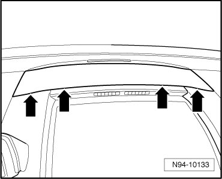
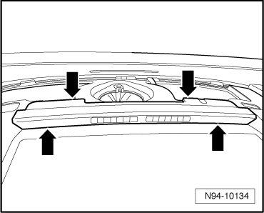
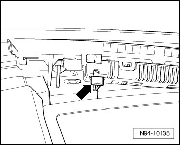

Left Front Parking Aid Display
Parking Aid System
Left Front Parking Aid Display
Left Front Parking Aid Display (Y13) is located above storage compartment in center of instrument cluster.
CAUTION!
When removing and installing components in visible area (switches, covers, trim, etc.), cover by taping the areas at which a prying tool (plastic wedge, screwdriver) will be positioned using commercially available adhesive tape.
Removing
- Switch off ignition, switch off all electrical consumers and remove ignition key.
- Carefully pry off cover from instrument cluster - arrows -.

- Pry out Left Front Parking Aid Display (Y13) from instrument cluster - arrows -.

- Disconnect electrical connection - arrow -.

Installing
Install in reverse order of removal.